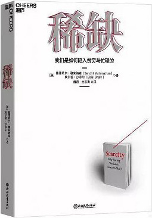

|  |
稀缺：我们是如何陷入贫穷与忙碌的 |
引言 资源稀缺不可怕，就怕有稀缺心态
塞德希尔和肖恩有一点是相同的，他们都感受到了稀缺所造成的影响。稀缺，是“拥有”少于“需要”的感觉：塞德希尔感觉心烦意乱，觉得自己的时间太少，而要去做的事情又太多；肖恩感觉手头拮据，有永远都还不完的账单。这一点相似之处，是否可以用来解释他们的行为？我们是否可以认为，“稀缺”就是导致塞德希尔和肖恩有如此相似行事方式的根源？
稀缺俘获大脑
研究人员发现，长期挨饿的人，从体型上就能看出来：实验过程中，研究对象的臀部脂肪会大大减少，以至于坐着都会感觉到疼痛，他们不得不垫上坐垫。另外，实际的体重减轻情况，则因水肿而难以进行估算，有人还曾因为饥饿而在体内额外累积了多达6千克重的液体。研究对象新陈代谢的速度也减缓了40%。他们开始感觉到有气无力，缺乏耐性。一位实验对象说：“在淋浴头下洗头时，我感觉到手臂瘫软。仅是洗头这一件事情，就令我的双臂疲劳到了极点。”
这辈子没有几件事情像这次实验那样，让我恨不得赶快结束。其实身体上的不适并没有多么严重，真正令人无法忍受的是，在实验过程中，食物成了人生中最重要的东西，成了人生的中心和唯一。而如果食物成了唯一，那么生活就会变得十分无趣。看电影时，男欢女爱的场面不会令你产生多大兴趣，而一旦那些男男女女开始吃东西，你就会眼前一亮。
饥饿的实验对象并不是有意选择忽略浪漫情节而关注进餐场景的，也不是有意选择将食物置于大脑中最重要的位置的，出现这一问题的原因是，饥饿俘获了他们的思想和注意力。在明尼苏达大学进行的研究中，这些行为只是研究记录中的一段脚注，并不是研究人员的关注点。而对于我们来说，这些行为恰恰反映了稀缺是如何改变我们的。
稀缺会俘获大脑。就像饥饿的研究对象日思夜想着食物一样，当我们经历任何一种形式的稀缺时，都会对稀缺的事物全神贯注。我们的思想会自动而强有力地转向未得到满足的需要：对于饥饿的人来说，他们需要食物；对于忙碌的人来说，他们需要亟待完成某项工作的时间；对于缺钱的人来说，他们需要想办法支付每个月的房租；而对于孤独的人来说，他们需要他人的陪伴。稀缺造成的后果不仅仅是因为我们会因拥有的太少而感到不悦，而是因为它会改变我们的思维方式，会强行侵入我们的思想之中。
你也许会认为，那些饿肚子的实验对象的成绩会比较差，因为他们已经精疲力竭了，而饥饿感会令他们无法集中注意力。但实验结果却让人大吃一惊：他们的成绩与那些吃饱喝足的实验对象一样优秀。有趣的是，一个特例除外。当与食物有关的词汇闪现出来时，饿肚子的实验对象会比饱餐后的实验对象认得更快、更好——他们能更加准确地认出“蛋糕”这个词。这类实验旨在帮助我们了解某人大脑中的关注点——当某个想法整天在我们的大脑中盘旋时，我们就能更加迅速地看到与此相关的词汇。因此，当饿肚子的人能更快地认出“蛋糕”时，我们便能一眼看出他们此刻心中所想的就是食物。在此，我们并不是依赖于翻阅菜谱或打算开餐馆等奇怪举动来推断他们的执念，他们作出回应的速度和准确性就能直接告诉我们：稀缺已经俘获了这些饿汉们的大脑。
这一现象并不局限于饥饿。一项研究发现，当实验对象口渴时，他们会更加快速地识别出“水”这个字（速度以几十毫秒计）。在所有这些情况中，稀缺都在潜意识的层面发挥着作用。无论大脑的主人是否愿意，稀缺都会牢牢地俘获他的注意力。
对注意力的俘获，会改变人的体验。在诸如车祸和抢劫等短暂而注意力高度集中的事件中，注意力的增强会引发研究人员所谓的“主观时间延展”现象——人们会感到这类事件的持续时间更长，因为在短时间内人们需要处理更大量的信息。同样，稀缺对注意力的俘获，不仅会影响我们的所见和所见的速度，而且也会影响我们对周遭世界的认识。一项针对孤独者的研究中，实验人员在实验对象面前用一秒钟时间展示了带有表情的人脸图片，然后要求实验对象描述出表情的含义。这些面孔表达的是愤怒、恐惧、快乐，还是悲伤？这一简单的任务可以对一项关键的社交技能进行衡量——理解他人感受的能力。有意思的是，孤独者的成绩更好。你也许会认为，孤独者无法回答这类问题，因为他们之所以会孤独，就是由不善于社交或缺乏社交经验所导致的。但当我们将稀缺心态考虑在内时，就能理解这一现象了：因为孤独者会去关注自身的稀缺状况，关注为数不多的亲人朋友；他们会对他人表情中所流露出来的情绪非常敏感。
经济学研究稀缺，但不触及心态
稀缺的感觉来自哪里？实质性的限制起到了一定的作用——有限的存款、欠下的债务、等待我们去完成的工作等。而同时，我们对事物重要性的主观理解也发挥了作用——我们需要完成多少工作？购买某件东西的意愿究竟有多急切？诸如此类的愿望，是由我们所处的文化环境、成长环境甚至遗传基因所决定的：我们可能会非常渴望得到某样东西，也许是出于生理原因，也许是因为看到了邻居的炫耀；我们对寒冷的感知，不仅取决于绝对温度，而且也与我们自身的新陈代谢有关。同样，对稀缺的感觉，取决于可用的资源和我们自身的体验。包括社会学家、心理学家、人类学家、神经学家、精神病学家和营销专家在内的各类学者，都曾尝试对这类体验进行解析。我们避开了对这一领域的讨论，将偏好置于一旁，转而去关注稀缺的内在逻辑及其带来的后果。当我们感觉自己拥有的太少时，大脑会发生什么样的变化？这种变化又会如何塑造我们的选择和行为？
当稀缺俘获大脑时，我们的注意力就会变得更加集中，做事就会更有效率。在生活中的许多情况下，保持注意力高度集中都颇具挑战：工作上的拖延，是因为我们总会被杂七杂八的事情所干扰；从超市买回了标价过高的东西，是因为我们心不在焉。而当我们心神专注时，就不会那么容易犯下粗心的错误了。这一点很好理解：稀缺之所以会俘获我们，是因为稀缺很重要，值得我们投以关注。
但究竟应该何时锁定心神，我们却无法完全自主选择。手头上那件尚未完成的工作，不仅让我们在工作时间内全情投入，而且也让我们在家辅导孩子做功课的时候心不在焉。这种不由自主的俘获，虽然会使我们集中注意力，但同时也是伴随一生的负担。因为我们总是将关注点放在稀缺上，思想总是围着稀缺打转，所以就没有那么多精力投入人生中的其他事物。这不仅仅是一个比喻说法。关于心智的容量，也就是我们所谓的“带宽”，是可以直接进行测量的。我们可以对影响自己处理信息、做出决策的“流体智力”进行测评，也可以对影响我们行为冲动与否的“执行控制力”进行测评。我们发现，稀缺会降低所有这些带宽的容量，致使我们缺乏洞察力和前瞻性，还会减弱我们的控制力。其影响力非常大。举例来说，贫穷状态会比彻夜不眠对人的认知能力产生的影响更大。产生这个问题的原因并不是穷人的带宽不及富人，而是因为贫困的经历会降低任何一个人的带宽。
每当想到“贫穷”这个词语时，我们就会自然而然地联想到缺钱；每当想到日理万机的人或孤苦无依的人时，我们就会联想到没时间与没朋友。我们的研究结果显示，各种类型的稀缺都会导致带宽变窄。由于带宽会对各个方面的行为产生影响，因此它的变窄也会引发一系列负面的后果。在塞德希尔和肖恩的例子中，我们看到了这种影响：难以坚持按计划行事，无法抗拒新皮衣的诱惑，无法拒绝新项目的吸引，忘性大（忘记验车、打电话、还账单），脑子不好使（错误地估计了银行账户中的余额，发错了邀请函），这些都是因为带宽变窄才发生的。在稀缺所引发的后果中，有一项尤为重要——稀缺会进一步延续并加剧稀缺。
从某种角度来看，本书所要表达的观点十分简单。稀缺会俘获我们的注意力，并带来一点点好处：我们能够在应对迫切需求时，做得更好。但从长远的角度来看，我们的损失更大：我们会忽视其他需要关注的事项，在生活的其他方面变得不那么有成效。这一观点不仅有助于对稀缺塑造行为的现象进行解释，同时也可以让我们从中得出一些令人意想不到的结论，并对我们应如何对自身的稀缺状态进行管理这个问题提供新答案。
正在发展中的稀缺科学
第一部分 稀缺心态是一切稀缺的根源
第1章 专注的“得”与管窥的“失”
在看这期节目时，我们都觉得科恩真是太幸运了——她得到的神秘食材是西兰花，所以她烹饪了自己的拿手好菜，也就是我们前一天刚刚品尝过的美味。评委们都对这道菜的口味赞赏有加。但事实上，科恩其实并非像我们所想的那样幸运——西兰花这种神秘食材，并没有让她展示出自己得心应手的烹饪技艺。恰恰相反，这期节目是在一年前录制的。就像她所说的那样：“现在菜单上的脆皮豆腐，就是在录制《铁人料理》的当场创作出来的。”就在那天晚上，科恩创造出了这道令她名声大振的拿手好菜。如果我们可以将这种现场灵感称为“幸运”，那么这种幸运就显得更加“卓尔不凡”。一位专家级人物花费了数年时间潜心积累了精湛的厨艺，而其最引以为傲的作品，却是在紧迫的时间和高度的压力下创造出来的。
当然，这道菜并非是凭空创造的。诸如此类的创意大爆发，是建立在成年累月的经验和辛劳的基础上的。紧迫的时间要求会令人头脑集中，迫使我们将之前积累的努力浓缩成即时产出的成果。设想你正在准备几天后就要在会议上做的报告。会议之前的这几天，你埋头苦干，但许多想法却总是摇摆不定。事实上，报告的大方向你可能已经确定好了，但如何将诸多思想组织起来却令你十分苦恼。眼看开会的日子一天天逼近，你再也没有磨蹭的时间了。稀缺，会迫使人做出选择。所有抽象的事物都会变得具体起来。如果没有最后的这一点推动力，即使你的大脑中已经充满了创意，却拿不出最终的计划。参加《铁人料理》节目之时，科恩已经拥有了属于自己的“秘密调料”——潜心钻研了数月甚至数年的烹饪技艺。稀缺并不能凭空创造出这些技艺，而是给了她一股推动力，让她将这些技艺整合起来，做出了一道人人称赞的美味佳肴。
资源稀缺换来了专注与回报
中途修正反映了稀缺俘获大脑所引发的一种结果——一旦时间不够用的现实变得无法逃避，我们就会开始集中精力。
在一项大规模的营销实验中，实验人员为一批客户邮寄了一张写有截止日期的礼券，而为另一批客户邮寄了不会过期的礼券。虽然不会过期的礼券一直都有效，但其使用率却很低。可见，如果没有时间稀缺的影响，礼券就不会吸引人们的注意力，甚至有可能会被丢弃在一旁，被人渐渐遗忘。在另一个领域中，组织研究者发现，在销售周期的最后几周（或几天）中，销售人员的工作努力程度达到了顶点。而我们进行的一项研究发现，距离发薪日越近，数据录入员工作得就会越卖力。
专注红利
从某种角度来看，蓝莓稀缺产生了与截止日期引发的时间稀缺相似的效果，这一现象令人感到有些意外。在游戏中少拿几颗蓝莓，与开会时仅有几分钟时间或工作时只剩下几个小时，两者之间似乎没有多少相似之处；而专注于每次射击中应该将弹弓拉到多长以及何时射出子弹的问题，与决定工作之中的对话与进度这样的复杂选择，也不存在什么相似之处。但当我们剥去了真实世界中的所有复杂性，仅剩下稀缺一项时，相似之处就会出现。蓝莓实验的初步研究结果显示，无论真实世界中发生了什么，稀缺都能够创造出专注红利。
管窥
亨顿的悲剧令人扼腕，但类似的悲剧还有很多。据统计，消防队员在车辆事故中丧生的概率排行第二位，仅次于心脏病。1984—2000年期间，机动车相撞引起的事故，在消防队员的死因中占到了20%～25%。在这些事故中，79%的消防队员死于没有系安全带。虽然我们无法确保消防队员的人身安全，但如此看来，只要随手系上安全带，就能挽救许多人的生命。
管窥所导致的忽视
管窥之所以能发挥作用，就是因为它会影响并指挥我们去想哪些事和不去想哪些事。
如果想要切身地感受一下这种作用，就请尝试一下下面这个小任务：尽量多地列出白色的东西。请试试看。我们先给出几个简单的例子来帮你开动脑筋。请花点时间想一想，除此之外，还有哪些白色的东西：
雪、牛奶……
你能想出多少种白色的东西？这个小任务是否比你最初设想的要难一些？
研究显示，有个方法可以帮你将这项任务变得简单：不给你“雪”和“牛奶”这两个例子。通过实验我们了解到，有了这些“小引子”的帮助，人们反而只能想到更少的相关事物，就算加上那些显而易见的例子也一样。
这种看似违背常理的结论，就是心理学家们常说的“抑制”（inhibition）发挥作用的结果。一旦你在脑海中建立起了“白色”与“牛奶”的链接，每次当你想到“白色的东西”时，这条被激活的链接就会将你直接带回到“牛奶”上，然后产生更为深化的激活。结果，所有其他白色的东西就都会受到抑制，让我们更不容易想到。就这样，你的脑子里一片空白。就连现在的我，也都想不到什么其他例子。“牛奶”是一个非常典型的白色事物，一旦激活与“白色”之间的链接，就会将其他所有白色的事物排除在外。这也是大脑的一个基本特点：对一项事物的专注会抑制竞争意识。当你生某人的气时，抑制作用会令你忽略他的好处：专注于他那些让你反感的地方，就会抑制你记忆中他积极的一面。
稀缺既能为人们带来收益（专注红利），也能让人们付出代价，而抑制机制就是这两者出现的根源。抑制作用限制了分心的想法，使得人能够专注于某一项事物。引述之前举过的例子，为什么截止日期会大大提高我们的工作效率？因为我们不会那么容易分心。我们不会想到同事发来的邮件，就算想到了也会很快忘掉。而目标抑制机制就是我们不那么容易分心的原因所在。“完成本章内容”这个主要目标会俘获我们的大脑。目标抑制机制限制了所有会导致拖延的分心事物，比如电子邮件、视频游戏或者零食；但同时也限制了我们本该投以关注的其他事物，比如去健身或回复一通重要的电话。
与专注红利实验中的情况一样，人们在贫穷时反而能够做出更有成效的猜测。但同时他们也会出现管窥心态，从而忽略另一组图片。这种现象会使他们的做事效率变得更低。在被忽略的一组图片上，实验对象的表现差了许多，但他们赚得的总分数在两轮游戏中都比较贫穷的实验对象要低。虽然他们的总猜测次数更多，但得分却更少。在两轮游戏中都面临猜测次数稀缺的问题，意味着实验对象不能忽略任何一组图片；而在一轮游戏中拥有充分的猜测机会，则容易令人们忽略这组图片，将注意力投入猜测次数贫乏的那一轮游戏之中。于是，他们对这轮游戏产生了过度关注。
我们将这种负面后果称为管窥负担。关于管窥负担与专注红利孰轻孰重的问题，就要具体问题具体分析了。若将游戏稍加改动，红利就会超过负担。我们的研究目的，不是为了证明管窥的成本永远大于专注的收益，而是要证实我们产生管窥心态并非是由得失利弊的权衡来决定的，稀缺会自动俘获我们的大脑。当稀缺将我们的大脑俘获时，我们不会通过对得失利弊的谨慎思考来进行权衡。可见，我们用管窥的方式来应对稀缺，既有利，又有弊。
管窥负担
研究人员发现，在贫困国家，他们很难说服穷苦的农民购买各类保险，包括健康险、农作物险等。比如，降水险能在降水量过低或过高时，保护农民的生计免受损失。但是就算政府提供大量补贴，绝大多数（甚至90%之多）农民都不会购买保险。健康险也是一样。当被问到为什么不买保险时，穷困的农民总是回答说他们买不起。而这一困扰正让他们遭遇了其最不想看到的事实：因为买不起保险，反而要承担经受不起的风险。
管窥的另一个表现就是，我们会因此做出同时处理多项任务的决定。我们可能会在“听着”电话会议的同时查收邮件，或者在吃晚餐的时候抽空回两封邮件。这样做的确能够节省出一些时间，但是却要付出代价。我们很可能会错过电话会议或晚餐中某人提供的某个信息，或是回了一封词不达意的邮件。而开车时同时处理多项任务就更有可能会酿下灾难了。每次想到有人开车时在做别的事情，我们首先就会联想到边开车边打电话的司机。的确，研究显示，开车时通过非手持移动电话进行通话的情况，可能比酒驾还要危险。我们也会想到边开车边吃三明治的司机。研究显示，开车时吃东西的后果同样很严重。很多人都有过边开车边吃东西的经历：一项研究发现，41%的美国人都曾经在开车时吃过一顿饭，包括早餐、午餐和晚餐。边开车边吃东西虽然可以节省下一些时间，但却让车主们承担了额外的风险，如把车弄脏、出交通事故，甚至在分心时摄入更多的卡路里。管窥会令人们想要同时做几件事情，因为这样可以节省时间，这是在“管子”视野之内获得的收益；而节省时间的同时可能会出现的问题，则处在“管子”视野之外。
一到经济衰退时，许多小企业就会犯同样的错误——大刀阔斧地削减营销预算，有的甚至将其削减为零。但是恰恰相反，经济衰退期正是小企业最需要进行营销的时刻。消费者永远都不会满足，总是想要改变他们的购买决策。你要将自己的品牌打出去，帮助消费者找到自己的产品和服务，才能在众多竞争对手中脱颖而出。因此，不能放弃营销。而如果有可能的话，中小企业更应该在经济低迷时增加营销力度。
第2章 带宽负担会降低人的智商
“噪声”干扰了我们的思想
纽黑文市（New Haven）的一所学校位于繁忙的铁道旁边。为了评估噪声对学生学习成绩的影响，两位研究人员经过调查发现，学校的建筑物只有一面朝向铁道，而这一面教室中的学生就最直接地暴露在了火车的噪声之中，这些学生其他方面则与别的同学无异。调查显示，位于学校两侧教室中的学生有着很大的不同：铁道一侧的六年级学生，比安静一侧的同年级学生在学业表现上落后了整整一年。研究结果出来后，市政府为此还专门安装了噪声隔离设备——这又为研究人员提供了新证据。他们发现，在噪声隔离设备安装好之后，学生之间的差距消失了。现在，建筑物两侧学生的学习成绩基本相当。随后进行的一系列研究显示，噪声会影响专注力和学习成绩。就算噪声会造成负面影响这一点不足为奇，那么这一负面影响的程度（六年级学生整整落后一年）也会令人感到惊讶。事实上，许多研究都得出了微量干扰即可产生巨大影响的结果，而这一案例只是其中之一。
在认知科学和神经科学领域，“内部干扰”的概念众所周知。大量研究都记录并证实了“内源性思考”对总体认知能力的深远影响，就连在大脑中重复一连串数字这种小事也被囊括在内。多年来，通过核磁共振成像技术进行的实验室研究，我们从中也了解到了大脑集中注意力的方式以及被干扰的表现形式。一个主要的区别存在于“自上而下”处理和“自下而上”处理之间：“自上而下”处理指的是思想会对所关注的事物进行有意识的选择；而“自下而上”处理则指的是注意力会被很难为我们所控制的刺激所俘获。在引言部分，有一个例子讲的是与食物有关的词汇能俘获饥饿之人的注意力。我们每个人都对这种感觉再熟悉不过：任何时候，一个快速的动作或突发的声音都能将我们的注意力从正在做的事情上吸引开来。一种特别值得注意的分心形式，它并不需要外部干扰因素的影响就会存在，那就是“神游”。
对于我们的心智处理器来说，稀缺也会产生类似的效应。稀缺会不断地给大脑装载其他处理内容，而留给处理当前任务的“心智”就没有那么多了。这就引出了我们本章所要呈现给读者的核心假设：稀缺会直接减少带宽——不是减少某人与生俱来的带宽容量，而是减少其当下能用得上的容量。
研究论文形式的书。两位作者分别是行为经济学领域和认知神经领域的大牛，行文风格非常严谨。